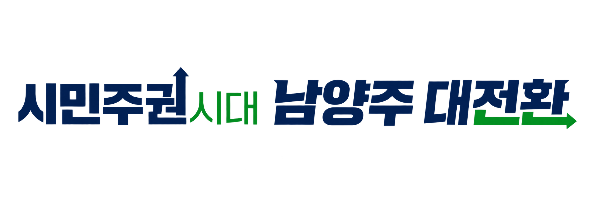

일하는 방식 개선 연구
AI와 프로그래밍 기술로 반복·수작업 및 행정 프로세스를 개선합니다.

사람을 위한 기술, 일상을 바꾸는 행정익숙한 업무에 새로운 가능성을 더합니다.
AI와 동료의 아이디어가 만나, 더 나은 남양주를 만듭니다.


다양한 현장의 동료
주요 성과물
연구 · 개발 · 공유
AI와 프로그래밍 기술로 반복·수작업 및 행정 프로세스를 개선합니다.
행정, 교통, 지적, 보건, 건축 등 분야별 혁신 사례를 연구하고 실무에 도입합니다.
민원 담당자와 함께 현업에 즉시 투입되는 웹앱·시스템을 제작합니다.
남양주시의 혁신 사례를 널리 알리는 디지털 홍보 전략을 지원합니다.
“이 업무, 조금 더 나아질 수 없을까?”
스마트 행정혁신 연구동아리는 AI와 프로그래밍 기술로 행정의 일하는 방식을 연구하는 남양주시 학습모임입니다. 행정, 교통, 지적, 보건, 건축 등 다양한 현장의 경험을 연결해 실제 업무에 적용할 수 있는 도구와 서비스를 함께 만듭니다.
반복되는 업무와 불편을 찾아내고, 국내외 스마트 행정혁신 사례에서 개선의 실마리를 찾습니다.
AI, 프로그래밍, IoT 기술을 배우고 협업해 현업에 바로 적용할 수 있는 프로그램을 개발합니다.
AI 홍보 영상부터 업무 도구까지, 연구 결과를 공유하고 남양주시의 스마트 행정 사례를 알립니다.
각자의 현장에서 모인 11명. 함께 배우고 실험하며 행정의 가능성을 넓힙니다.
| NO. | 이름 | 소속 | 직급 | 역할 |
|---|
행정 현장과 시민의 일상에 연결되는, 우리의 실험들입니다.
전체 24개의 성과물
검색 결과가 없습니다. 다른 검색어로 찾아보세요.
제공된 자료의 주소를 그대로 반영했습니다. ‘AI 활용 프롬프트’와 ‘업무활용 단축키’는 원문에 같은 주소가 기재되어 있습니다. 주소가 제공되지 않은 성과물은 링크 준비 중으로 표시합니다.